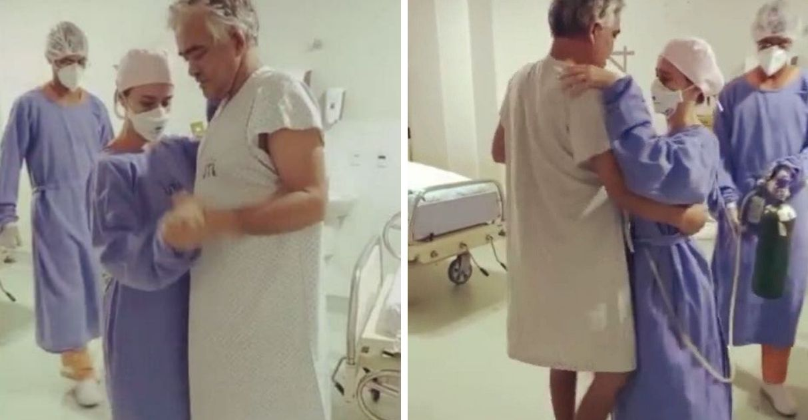

Bem-vindo!
Confira abaixo a lista das seis melhores notícias sobre a covid 19.
1. Números mostram pandemia estabilizada com a vacinação no Brasil, mas especialistas reforçam uso contínuo de máscara
Média de mortes diárias se estabilizou na faixa de 500 por dia, patamar bem mais baixo que o pico em abril. Vacina começa a derrubar índices e combinação com outras medidas de prevenção é essencial para debelar a pandemia, afirmam médicos.
As mortes, as internações e os casos graves e leves de Covid-19 têm sofrido uma redução expressiva nos últimos meses no Brasil. Segundo especialistas ouvidos pelo g1, essa trajetória é resultado do avanço da vacinação e, para que seja mantida nos próximos meses, deve continuar sendo acompanhada de outras medidas de prevenção, especialmente o uso de máscaras.
Desde o pico da pandemia, a média móvel de mortes por Covid-19 caiu 86% no Brasil, segundo dados do consórcio de veículos de imprensa. De 3.125 em 12 de abril para 438 nesta quinta-feira - a menor marca desde novembro de 2020. O número mostra a expressiva redução dos óbitos provocados pelo coronavírus nos últimos meses.
2. Paciente vence Covid-19 após 94 dias de luta e dança forró com médica para comemorar em GO
- 
Foram necessários quase 100 dias, mas o marceneiro Elismário Amorim, 54 anos, venceu a Covid-19 em um hospital de Goiânia (GO).
Para comemorar sua alta, ele convidou a médica Isadora Mota, responsável pelo tratamento, para dançar forró.
Semanas antes, no estágio mais avançado e crítico da doença, Elismário chegou a ter 99% dos pulmões comprometidos.
Semanas antes, no estágio mais avançado e crítico da doença, Elismário chegou a ter 99% dos pulmões comprometidos.
“O afeto faz parte da cura... Ler mais
3. Anvisa aprova ampliação do prazo de validade da vacina da Janssen para 6 meses
-
Prazo anterior do imunizante contra a Covid-19 era de 4 meses e meio. Segundo a agência de vigilância, avaliação de dados de estudos demonstrou que vacina se manteve estável por 6 meses.
A Agência Nacional de Vigilância Sanitária (Anvisa) aprovou por unanimidade neste sábado (9) a extensão do prazo de validade da vacina contra a Covid-19 da Janssen de 4,5 meses para 6 meses, sob condições de armazenamento de 2°C a 8°C.
A empresa Janssen-Cilag Farmacêutica solicitou a alteração do prazo no dia 15 setembro para a autorização temporária de uso emergencial, em caráter experimental.
Segundo a Anvisa, a aprovação foi baseada "em uma criteriosa avaliação dos dados de qualidade dos estudos que demonstrou que a vacina se manteve estável pelo período (6 meses)."